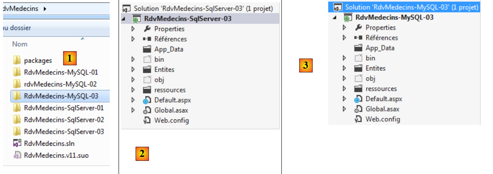

4. Casestudy met MySQL 5.5.28
4.1. Installatie van de tools
De volgende tools moeten worden geïnstalleerd:
- SGBD: [http://dev.mysql.com/downloads/];
- een beheertool: EMS SQL Manager voor MySQL Freeware [http://www.sqlmanager.net/fr/products/mysql/manager/download].
In de volgende voorbeelden heeft de gebruiker root het wachtwoord root.
Laten we MySQL5 starten. Hier doen we dat vanuit het venster met Windows-services [1]. In [2] wordt SGBD gestart.
 |
We starten nu het hulpprogramma [SQL Manager Lite for MySQL] waarmee we SGBD en [3] gaan beheren.
 |
- In [4] maken we een nieuwe database aan;
- in [5] geven we de naam van de database op;
 |
- in [5] loggen we in als root / root;
- in [6] bevestigen we de opdracht SQL die zal worden uitgevoerd;
 |
- in [7] is de database aangemaakt. Deze moet nu worden opgeslagen in [EMS Manager]. De gegevens kloppen. We voeren [OK] uit;
- in [8] maken we verbinding;
- in [9] geeft [EMS Manager] de database weer, die voorlopig nog leeg is.
We gaan nu een VS 2012-project aan deze database koppelen.
4.2. De database aanmaken op basis van entiteiten
We maken het consoleproject VS 2012 [RdvMedecins-MySQL-01] [1] hieronder aan:
 |
- in [2] voegen we verwijzingen naar het project toe via NuGet;
 |
- in [3] wordt de verwijzing EF 5 toegevoegd;
- in [4] staat deze nu in de verwijzingen;
 |
- in [5], we beginnen opnieuw om deze keer [MySQL.Data.Entities] toe te voegen, wat een connector is voor ADO.NET voor Entity Framework. Om het pakket te vinden, kun je gebruikmaken van het zoekveld [6];
- bij [7] verschijnen twee verwijzingen: [MySQL.Data.Entities] en [MySQL.Data], waarbij de laatste een afhankelijkheid is van de eerste.
Nu gaan we het project [RdvMedecins-MySQL-01] opbouwen op basis van het project [RdvMedecins-SqlServer-01].
 |
- naar [1], we kopiëren de geselecteerde elementen;
- in [2] plakken we ze in het project [RdvMedecins-MySQL-01];
- in [3]: omdat er meerdere programma’s zijn met de methode [Main], moeten we het startproject specificeren.
In dit stadium zou het genereren van het project moeten lukken. Nu gaan we het configuratiebestand [App.config] aanpassen, dat de verbindingsstring met de database configureert, en het bestand DbProviderFactory. Het ziet er dan als volgt uit:
<?xml version="1.0" encoding="utf-8"?>
<configuration>
<configSections>
<!-- Ga voor meer informatie over de configuratie van Entity Framework naar http://go.microsoft.com/fwlink/?LinkID=237468 -->
<section name="entityFramework" type="System.Data.Entity.Internal.ConfigFile.EntityFrameworkSection, EntityFramework, Version=5.0.0.0, Culture=neutral, PublicKeyToken=b77a5c561934e089" requirePermission="false" />
</configSections>
<startup>
<supportedRuntime version="v4.0" sku=".NETFramework,Version=v4.5" />
</startup>
<entityFramework>
<defaultConnectionFactory type="System.Data.Entity.Infrastructure.SqlConnectionFactory, EntityFramework" />
</entityFramework>
<!-- verbindingsreeks-->
<connectionStrings>
<add name="monContexte"
connectionString="Server=localhost;Database=rdvmedecins-ef;Uid=root;Pwd=root;"
providerName="MySql.Data.MySqlClient" />
</connectionStrings>
<!-- de factory provider -->
<system.data>
<DbProviderFactories>
<add name="MySQL Data Provider" invariant="MySql.Data.MySqlClient" description=".Net Framework Data Provider for MySQL"
type="MySql.Data.MySqlClient.MySqlClientFactory, MySql.Data, Version=6.5.4.0, Culture=neutral, PublicKeyToken=C5687FC88969C44D"
/>
</DbProviderFactories>
</system.data>
</configuration>
- regel 17: de verbindingsstring naar de database MySQL [rdvmedecins-ef] die we hebben aangemaakt;
- regel 24: de versie moet overeenkomen met die van de referentie [MySql.Data] van het project [1]:
 |
Er zijn ook enkele configuratie-instellingen in het bestand [Entites.cs], waarin de namen van de tabellen en het schema waartoe ze behoren worden gespecificeerd. Dit kan variëren afhankelijk van het SGBD-bestand. Dat is hier het geval, waar geen schema zal zijn. Het bestand [Entites.cs] ziet er als volgt uit:
[Table("MEDECINS")]
public class Medecin : Personne
{...}
[Table("CLIENTS")]
public class Client : Personne
{...}
[Table("CRENEAUX")]
public class Creneau
{...}
[Table("RVS")]
public class Rv
{...}
Laten we het programma [CreateDB_01] [2] uitvoeren. We krijgen de volgende uitzondering:
Dezelfde fout verschijnt vier keer (regels 2-5). Het type rowversion doet denken aan het veld met de annotatie [Timestamp] in de entiteiten:
[Column("TIMESTAMP")]
[Timestamp]
public byte[] Timestamp { get; set; }
We besluiten deze drie regels te vervangen door de volgende:
[ConcurrencyCheck]
[Column("VERSIONING")]
public DateTime? Versioning { get; set; }
We wijzigen het type van de kolom van byte[] naar DateTime?. We doen dit omdat MySQL een type [TIMESTAMP] heeft dat een datum/tijd vertegenwoordigt en omdat een kolom met dit type automatisch wordt bijgewerkt door MySQL telkens wanneer de rij wordt bijgewerkt. Hierdoor kunnen we gelijktijdige toegang beheren.
De annotatie [Timestamp] kan alleen worden toegepast op een kolom van het type byte[]. We vervangen deze door de annotatie [ConcurrencyCheck]. Beide annotaties beheren gelijktijdige toegang. We doen dit voor de vier entiteiten en voeren de applicatie vervolgens opnieuw uit. We krijgen dan de volgende foutmelding:
Regel 1 duidt op een syntaxisfout in de SQL die wordt uitgevoerd door MySQL. Aangezien deze niet door ons is gegenereerd, maar door de provider ADO.NET van MySQL, kunnen we dit niet corrigeren. We kunnen echter wel vaststellen dat er tabellen zijn aangemaakt door [1], zoals hieronder weergegeven:
 |
- in [2] is de structuur van de tabel [clients] [3] te zien.
Er moeten verschillende wijzigingen worden aangebracht in de gegenereerde database:
- het type van de kolom [VERSIONING] is niet geschikt. Dit moet worden gewijzigd in het type MySQL [TIMESTAMP];
- we herinneren ons dat de tabel [rvs] een uniekheidsbeperking heeft. Deze is niet aangemaakt door deze generatie;
- de connector ADO.NET van SQL Server had vreemde sleutels gegenereerd met de clausule ON DELETE CASCADE. De connector ADO.NET van MySQL heeft dit niet gedaan.
Net zoals we bij de SQL-server hebben gedaan, moeten we daarom de gegenereerde database aanpassen. We laten niet zien hoe je de wijzigingen moet aanbrengen. We geven alleen het script voor het aanmaken van de database:
# SQL Manager Lite voor MySQL 5.3.0.2
# ---------------------------------------
# Host : localhost
# Poort : 3306
# Database: rdvmedecins-ef
/*!40101 SET @OLD_CHARACTER_SET_CLIENT=@@CHARACTER_SET_CLIENT */;
/*!40101 SET @OLD_CHARACTER_SET_RESULTS=@@CHARACTER_SET_RESULTS */;
/*!40101 SET @OLD_COLLATION_CONNECTION=@@COLLATION_CONNECTION */;
/*!40101 SET NAMES utf8 */;
SET FOREIGN_KEY_CHECKS=0;
USE `rdvmedecins-ef`;
#
# Structuur voor de tabel `clients`:
#
CREATE TABLE `clients` (
`ID` INTEGER(11) NOT NULL AUTO_INCREMENT,
`NOM` VARCHAR(30) COLLATE utf8_general_ci NOT NULL,
`PRENOM` VARCHAR(30) COLLATE utf8_general_ci NOT NULL,
`TITRE` VARCHAR(5) COLLATE utf8_general_ci NOT NULL,
`VERSIONING` TIMESTAMP NOT NULL ON UPDATE CURRENT_TIMESTAMP DEFAULT CURRENT_TIMESTAMP,
PRIMARY KEY USING BTREE (`ID`) COMMENT ''
)ENGINE=InnoDB
AUTO_INCREMENT=96 AVG_ROW_LENGTH=4096 CHARACTER SET 'utf8' COLLATE 'utf8_general_ci'
COMMENT=''
;
#
# Structuur van de tabel `medecins`:
#
CREATE TABLE `medecins` (
`ID` INTEGER(11) NOT NULL AUTO_INCREMENT,
`NOM` VARCHAR(30) COLLATE utf8_general_ci NOT NULL,
`PRENOM` VARCHAR(30) COLLATE utf8_general_ci NOT NULL,
`TITRE` VARCHAR(5) COLLATE utf8_general_ci NOT NULL,
`VERSIONING` TIMESTAMP NOT NULL ON UPDATE CURRENT_TIMESTAMP DEFAULT CURRENT_TIMESTAMP,
PRIMARY KEY USING BTREE (`ID`) COMMENT ''
)ENGINE=InnoDB
AUTO_INCREMENT=56 AVG_ROW_LENGTH=4096 CHARACTER SET 'utf8' COLLATE 'utf8_general_ci'
COMMENT=''
;
#
# Structuur van de tabel `creneaux`:
#
CREATE TABLE `creneaux` (
`ID` INTEGER(11) NOT NULL AUTO_INCREMENT,
`HDEBUT` INTEGER(11) NOT NULL,
`MDEBUT` INTEGER(11) NOT NULL,
`HFIN` INTEGER(11) NOT NULL,
`MFIN` INTEGER(11) NOT NULL,
`MEDECIN_ID` INTEGER(11) NOT NULL,
`VERSIONING` TIMESTAMP NOT NULL ON UPDATE CURRENT_TIMESTAMP DEFAULT CURRENT_TIMESTAMP,
PRIMARY KEY USING BTREE (`ID`) COMMENT '',
INDEX `MEDECIN_ID` USING BTREE (`MEDECIN_ID`) COMMENT '',
CONSTRAINT `creneaux_ibfk_1` FOREIGN KEY (`MEDECIN_ID`) REFERENCES `medecins` (`ID`) ON DELETE CASCADE ON UPDATE NO ACTION
)ENGINE=InnoDB
AUTO_INCREMENT=472 AVG_ROW_LENGTH=455 CHARACTER SET 'utf8' COLLATE 'utf8_general_ci'
COMMENT=''
;
#
# Structuur van de tabel `rvs`:
#
CREATE TABLE `rvs` (
`ID` INTEGER(11) NOT NULL AUTO_INCREMENT,
`JOUR` DATE NOT NULL,
`CRENEAU_ID` INTEGER(11) NOT NULL,
`CLIENT_ID` INTEGER(11) NOT NULL,
`VERSIONING` TIMESTAMP NOT NULL ON UPDATE CURRENT_TIMESTAMP DEFAULT CURRENT_TIMESTAMP,
PRIMARY KEY USING BTREE (`ID`) COMMENT '',
UNIQUE INDEX `CRENEAU_ID_JOUR` USING BTREE (`JOUR`, `CRENEAU_ID`) COMMENT '',
INDEX `CRENEAU_ID` USING BTREE (`CRENEAU_ID`) COMMENT '',
INDEX `CLIENT_ID` USING BTREE (`CLIENT_ID`) COMMENT '',
CONSTRAINT `rvs_ibfk_2` FOREIGN KEY (`CLIENT_ID`) REFERENCES `clients` (`ID`) ON DELETE CASCADE ON UPDATE NO ACTION,
CONSTRAINT `rvs_ibfk_1` FOREIGN KEY (`CRENEAU_ID`) REFERENCES `creneaux` (`ID`) ON DELETE CASCADE ON UPDATE NO ACTION
)ENGINE=InnoDB
AUTO_INCREMENT=28 AVG_ROW_LENGTH=16384 CHARACTER SET 'utf8' COLLATE 'utf8_general_ci'
COMMENT=''
;
- regels 22, 38, 54, 74: de primaire sleutels ID van de tabellen zijn van het type AUTO_INCREMENT en dus gegenereerd door MySQL;
- regels 26, 42, 60, 78: de kolom VERSIONING is van het type TIMESTAMP en wordt bijgewerkt bij een INSERT of een UPDATE;
- regel 63: de vreemde sleutel van de tabel [creneaux] naar de tabel [medecins] met de clausule ON DELETE CASCADE;
- regel 80: de uniekheidsbeperking van de tabel [rvs];
- regel 83: de vreemde sleutel van de tabel [rvs] naar de tabel [creneaux] met de clausule ON DELETE CASCADE;
- regel 84: de externe sleutel van tabel [rvs] naar tabel [clients] met de clausule ON DELETE CASCADE ;
Het script voor het genereren van de tabellen van de database MySQL [rvmedecins-ef] is in de map [RdvMedecins / databases / mysql] geplaatst. De lezer kan het laden en uitvoeren om zijn tabellen aan te maken.
Zodra dit is gebeurd, kunnen de verschillende programma’s van het project worden uitgevoerd. Ze leveren dezelfde resultaten op als met SQL Server, behalve het programma [ModifyDetachedEntities], dat crasht. Om te begrijpen waarom, kan men het resultaat van het programma [ModifyAtttachedEntities] bekijken:
- regels 1-2: een klant vóór het opslaan van de context;
- regels 3-4: de client na het opslaan. Deze heeft een primaire sleutel, maar geen waarde voor het veld [Versioning], terwijl SQL Server het veld [Timestamp] van de entiteit bijwerkte.
Laten we nu de code bekijken van het programma [ModifyDetachedEntities] dat crasht:
using System;
...
namespace RdvMedecins_01
{
class ModifyDetachedEntities
{
static void Main(string[] args)
{
Client client1;
// de huidige database wordt leeggemaakt
Erase();
// een klant toevoegen
using (var context = new RdvMedecinsContext())
{
// klant aanmaken
client1 = new Client { Titre = "x", Nom = "x", Prenom = "x" };
// de klant aan de context toevoegen
context.Clients.Add(client1);
// de context wordt opgeslagen
context.SaveChanges();
}
// basisweergave
Dump("1-----------------------------");
// klant1 staat niet in de context – deze wordt aangepast
client1.Nom = "y";
// entiteit buiten de context wijzigen
using (var context = new RdvMedecinsContext())
{
// hier hebben we een nieuwe lege context
// we plaatsen klant1 in de context in een gewijzigde status
context.Entry(client1).State = EntityState.Modified;
// we slaan de context op
context.SaveChanges();
}
...
}
static void Erase()
{
...
}
static void Dump(string str)
{
...
}
}
}
- regel 20: een klant wordt opgeslagen. Hij heeft dan wel zijn primaire sleutel, maar niet de juiste versie;
- regel 33: er wordt een wijziging aangebracht bij client1. Dit mislukt omdat hij niet de versie heeft die in de database staat.
We lossen het probleem op door de volgende code tussen regel 25 en 26 in te voegen:
// we halen client1 op om de versie ervan te verkrijgen
using (var context = new RdvMedecinsContext())
{
// client2 komt in de context
Client client2 = context.Clients.Find(client1.Id);
// de versie van client1 wordt gelijkgesteld aan die van client2
client1.Versioning = client2.Versioning;
}
Voortaan heeft de entiteit [client1] dezelfde versie als in de database en kan deze dus worden gebruikt om de rij in de database bij te werken.
4.3. Meerlaagse architectuur op basis van EF 5
We keren terug naar onze casestudy die in paragraaf 2 is beschreven.
 |
We beginnen met het opbouwen van de gegevenslaag [DAO]. Hiervoor maken we het consoleproject VS 2012 [RdvMedecins-MySQL-02] [1] aan:
 |
- in [2] worden de referenties [Common.Logging, EntityFramework, MySql.Data, MySql.Data.Entity, Spring.Core] toegevoegd aan NuGet;
- in [3] wordt de map [Models] gekopieerd vanuit het project [RdvMedecins-MySQL-01];
 |
- in [4] worden de mappen [Dao, Exception, Tests] en het bestand [App.config] gekopieerd vanuit het project [RdvMedecins-SqlServer-02];
- in [5] is het bestand [Program.cs] verwijderd;
- in [6] is het project geconfigureerd om het testprogramma van de laag [DAO] uit te voeren.
In het bestand [App.config] worden de gegevens van de database SQL Server vervangen door die van de database MySQL. Deze zijn te vinden in het bestand [App.config] van het project [RdvMedecins-MySQL-01]:
<!-- verbindingsstring-->
<connectionStrings>
<add name="monContexte"
connectionString="Server=localhost;Database=rdvmedecins-ef;Uid=root;Pwd=root;"
providerName="MySql.Data.MySqlClient" />
</connectionStrings>
<!-- de factory provider -->
<system.data>
<DbProviderFactories>
<add name="MySQL Data Provider" invariant="MySql.Data.MySqlClient" description=".Net Framework Data Provider for MySQL"
type="MySql.Data.MySqlClient.MySqlClientFactory, MySql.Data, Version=6.5.4.0, Culture=neutral, PublicKeyToken=C5687FC88969C44D"
/>
</DbProviderFactories>
</system.data>
Ook de door Spring beheerde objecten veranderen. Momenteel hebben we:
<!-- Spring-configuratie -->
<spring>
<context>
<resource uri="config://spring/objects" />
</context>
<objects xmlns="http://www.springframework.net">
<object id="rdvmedecinsDao" type="RdvMedecins.Dao.Dao,RdvMedecins-SqlServer-02" />
</objects>
</spring>
Regel 7 verwijst naar de assembly van het project [RdvMedecins-SqlServer-02]. De assembly is nu [RdvMedecins-MySQL-02].
Nu dit is gebeurd, zijn we klaar om de test van de laag [DAO] uit te voeren. Eerst moeten we ervoor zorgen dat de database wordt gevuld (programma [Fill] van het project [RdvMedecins-MySQL-01]). De test slaagt.
We maken de DLL van het project aan, net zoals we dat hebben gedaan voor het project [RdvMedecins-SqlServer-02], en we verzamelenalle DLL-bestanden van het project in een map [lib] die is aangemaakt in [RdvMedecins-MySQL-02]. Dit worden de referenties voor het webproject [RdvMedecins-MySQL-03] dat hierna volgt.
 |
We zijn nu klaar om de laag [ASP.NET] van onze applicatie te bouwen:
 |
We gaan uit van het project [RdvMedecins-SqlServer-03]. We dupliceren de map van dit project naar [RdvMedecins-MySQL-03] en [1]:
 |
- in [2], met VS 2012 Express voor het web, openen we de oplossing uit de map [RdvMedecins-MySQL-03];
- in [3] wijzigen we zowel de naam van de oplossing als de naam van het project;
 |
- in [4], de huidige projectreferenties;
- in [5] verwijderen we deze;
- in [6], om ze te vervangen door verwijzingen naar de DLL die we zojuist hebben opgeslagen in een map [lib] van het project [RdvMedecins-MySQL-02].
Nu hoeven we alleen nog maar het bestand [Web.config] aan te passen. We vervangen de huidige inhoud ervan door de inhoud van het bestand [App.config] uit het project [RdvMedecins-MySQL-02]. Zodra dit is gebeurd, voeren we het webproject uit. Het werkt.
4.4. Conclusion
Laten we even samenvatten wat er is gedaan om over te stappen van de SGBD SQL-server naar de SGBD MySQL:
- het veld dat werd gebruikt om de concurrentie bij de toegang tot entiteiten te beheren, is gewijzigd. De versie op de SQL-server was:
[Column("TIMESTAMP")]
[Timestamp]
public byte[] Timestamp { get; set; }
Dit is nu:
[ConcurrencyCheck]
[Column("VERSIONING")]
public DateTime? Versioning { get; set; }
met MySQL;
- de annotaties [Table] die een entiteit aan een tabel koppelen, zijn gewijzigd;
- de verbindingsstring naar de database en [DbProviderFactory] zijn gewijzigd in de configuratiebestanden [App.config] en [Web.config];
- na het opslaan in de database had een entiteit SQL Server zowel haar primaire sleutel als haar Timestamp. Met MySQL had ze alleen haar primaire sleutel. Dit leidde tot een aanpassing in de code.
Uiteindelijk waren het vrij weinig wijzigingen, maar de code moest toch worden herzien. We herhalen dezelfde procedure voor drie andere SGBD:
- De SGBD Oracle Database Express Edition 11g Release 2;
- De SGBD PostgreSQL 9.2.1;
- De SGBD Firebird 2.1.